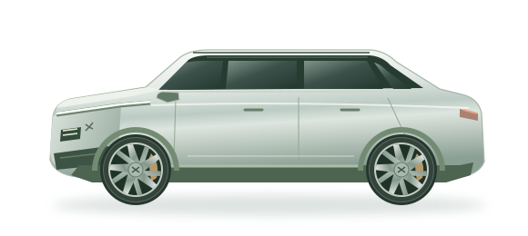

The places you went. The energy you used. All in one place.

Distance travelled, day by day
State of charge over time
Driving sessions detected from movement
A closer look at your car
Distance is the change in recorded odometer. Driving time counts source samples with speed above 1 km/h. Duplicate timestamps are counted once. Journeys group moving minutes, separated by at least 5 minutes without movement; their start and end times are approximate.
Charts show one-minute averages. Peak speed uses the highest original sample. Battery power is voltage × current; its sign follows the export. Energy figures are estimates from the available samples, not billing or charger measurements. Tyre pressures are displayed as recorded, in kPa.
The export may begin or end during a journey. Missing values stay missing. No GPS coordinates are included, so routes and destinations are unavailable.
The VIN is excluded from the dashboard dataset. The original ZIP remains on your computer.